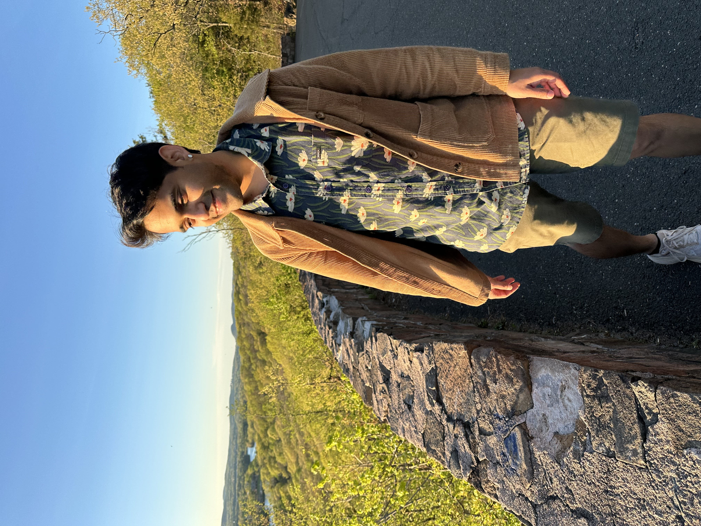

I am a researcher at Mistral AI. I am broadly interested in machine learning theory and reinforcement learning. You can find more about my research and selected publications here.
Previously, I was a postdoctoral associate in Yale University mentored by Dan Spielman. I completed my PhD in the theory
group at
UCSD advised by Sanjoy Dasgupta and
Shachar Lovett. I have spent some fun summers at Microsoft Research, Institute for Advanced Study
and Simons Institute.
Bootcamp:
ICTS: RL Theory Bootcamp, Fall 2025
Past Courses:
CPSC 648: Quantum Codes, Fall 2024